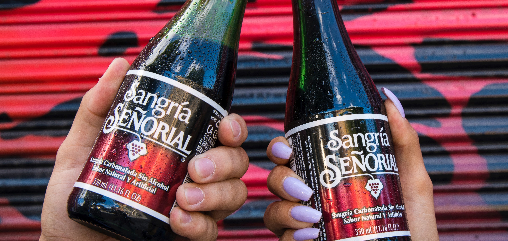
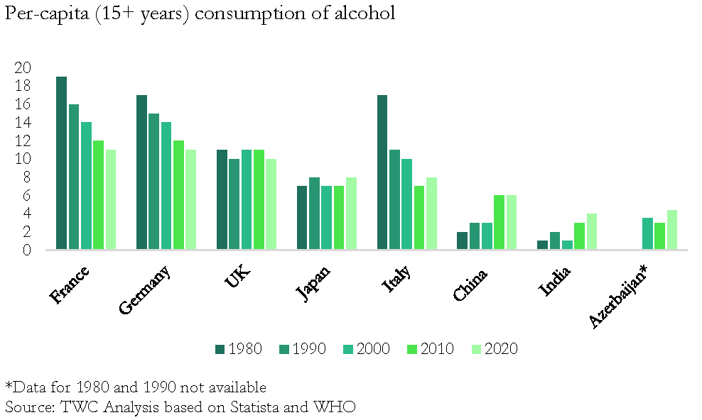
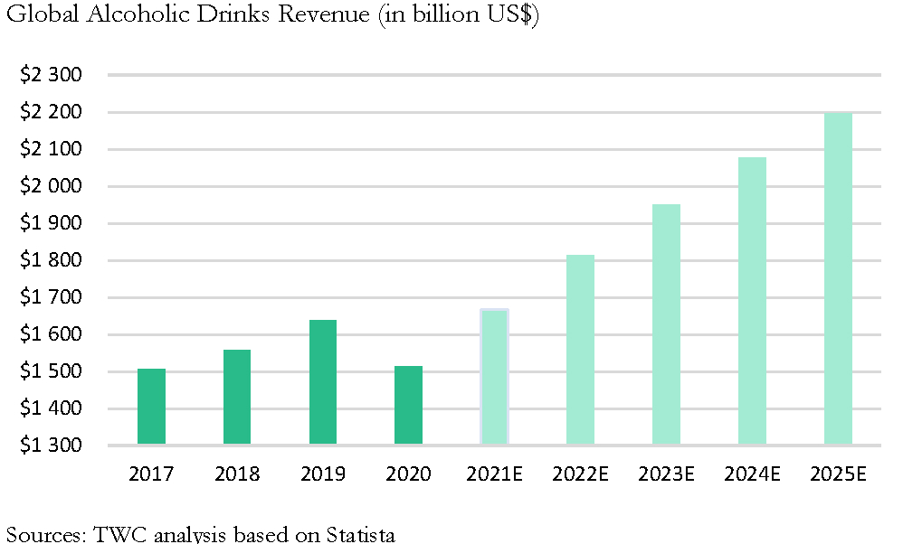

Böyüyən qlobal industriya satışları istehlak dalğası üzərində deyil


Böyüyən qlobal industriya satışları istehlak dalğası üzərində deyil
8 Oktyabr 2021
Anar İsmayılovAlkoqollu içkilər senayesinin yeni dövründə bir şey dəqiqdir: premiumizasiya bazar mənzərəsini həmişəlik dəyişəcək. Sürətli dəyişən istehlakçı davranışları rəqabət balansına təsir göstərdiyi üçün zəif oyunçular mövqelərini qorumaqda əziyyət çəkir.
Qalib olmaq üçün oyunçular cəsarətli hərəkətlər etməlidir. Ancaq, hazırki premiumizasiya dalğasını üstələyə bilmək üçün alkoqol istehlakı trendlərinin şirkətlərin bizneslərinə necə təsir etdiyini və hansı strategiyaların tətbiq edilməsini tapmalıdır.
Hazırki trendlərPremiumizasiya: Həm qlobal, həm də yerli perspektivdən baxdıqda dəyişən yaş strukturu və insanların səhhətlərinə olan diqqətləri alkoqol istehlakına mənfi təsir göstərir (aşağıdakı cədvələ nəzər yetirin); bir çox ölkədə alkoqol istehlakı ya mənfi ya da dəyişməz olaraq qalır.

Ancaq bu, şirkətlər üçün satışların azalmasına səbəb olmur, əksinə daha yüksək qiymətlərə görə satışların artmasına gətirib çıxarır (aşağıdakı cədvələ nəzər yetirin) xüsusilə inkişaf etmiş və sənayeləşmiş ölkələrdə baxmayaraq ki, inkişaf etməkdə olan ölkələr üçün son illərdə istehlakın bazar həddinin yetişməsi müşahidə olunur.

Ancaq bu, şirkətlər üçün satışların azalmasına səbəb olmur, əksinə daha yüksək qiymətlərə görə satışların artmasına gətirib çıxarır (aşağıdakı cədvələ nəzər yetirin) xüsusilə inkişaf etmiş və sənayeləşmiş ölkələrdə baxmayaraq ki, inkişaf etməkdə olan ölkələr üçün son illərdə istehlakın bazar həddinin yetişməsi müşahidə olunur.
AB InBev, Heineken, DIAGEO, Pernod Ricard ve Constellation Brands kimi ən böyük qlobal oyunçulara baxdığımızda oxşar tendensiyanı fərqli formada görürük. Məsələn bu oyunçuların hamısı satışlarının əksər hissəsini bir neçə bestsellerlərdən edir, hansi ki, bu bestsellerlər aqressiv şəkildə marketinq kampaniyaları tərəfindən dəstəklənmişdir.
“Azərbaycanda alkoqol istehsalçılarının sayı məhduddur, lakin bazar çoxlu sayda (təxmini 120) özəl etiketlər (private label) tərəfindən kannibalizasiyaya uğrayır”
Bir alkoqol istehsal edən şirkətin kommersiya direktoru
Bu cür kampaniyalar nisbətən asağı brend məlumatlılığı ilə xarakterizə olunan sektorda olduqca təsirli olduğu müşahidə olunur. Məsələn, çoxlu yerli ve xarici alkoqol brendləri tərəfindən retaillərin rəflərində yer buraxılmayan Azerbaycan kimi bir bazarda rəqabət əsas olaraq qiymət faktoruna əsaslanır, bu səbəbdən də müştərilərin istəklərini və ehtiyaclarını nəzərə alan düzgün brend strategiyası müştəriləri premium brendlərə “trade up”-a inandıracaqdır. Rəqabətə gəldikdə isə yerli alkoqol istehsalçıları böyüməyə təkan verən və özəl etiketlər üzərində böyük rəqabət üstünlüyü yaradan marketinq strategiyalarını yarada biləcək maliyyə və daxili nou-hau-ya sahibdir.
Bu trendə əsasən istehlakçılara gəldikdə isə, ortalama olaraq, onlar daha çox içmək istəmirlər, “yaxşı” içmək istəyirlər. Həm qlobal, həm də yerli alkoqol istehlakçılarına gəldikdə isə onlar müştərilərə mümkün qədər daha yaxın olmalarını tələb edən yeni reallığa uyğunlaşmalıdırlar.
Sağlamlığa qayğı: Sağlamlıqla əlaqəli narahtatlığın başında olan qara kölgə, istehsalçılara istehlakçıların saglamlığına vurğu edən brendlər vasitəsilə əhəmiyyətli bazar payı əldə etməyə şərait yaradır. Bu cür istehlakçı qrupları əsasən üst yaş qrupunda olanlardan və sağlamlıqlarına diqqət yetirən Milenniallardan ve Gen Z-dən ibarətdir. Belə bir trend öz-özlüyündə Alkoqolsuz və Az Alkoqollu İçkilər (AAAI) doldura biləcəyi kateqoriya genişlənməsinə ehtiyaca gətirib çıxarır. AB InBev kimi bəzi sektor oyunçuları üçün AAAI-nin sadəcə pivə kateoqiyası üçün 2025-ci ilə qədər ümumi satışların dörddə birini təşkil edəcəyini gözləyirlər.
Buna görə, istehlakçıya gəldikdə, ortalama olaraq, onlar sadəcə yaxşı içmək istəmirlər, həm də daha sağlam içmək istəyirlər.
Satınalma tərzində dəyişiklik: COVID-19-un başlanğıcından etibarən, e-ticarət sahəsində olan bir çox retailerlər üçün satışlar əhəmiyyətli dərəcədə artıb – bir çox regionda illik satışda artım 100%-in üzərində olub. Hazırda, həm qlobal həm də yerli bazarlarda retailerlərin illik və rüblük paylaşdığı məlumatlara əsasən alkoqolun onlayn satışı digər məhsul kateqoriyaları ilə müqayisədə xeyli aşağıdır. Millionarier’s Club-un araşdırmasına əsasən 2019-cu il ilə müqayisədə 2020-ci ildə alkoqolun qlobal e-ticaret satışları 45% artıb və nəzərə alsaq ki, Azerbaycanda e-ticarətə nüfuz dərəcəsi 2020-ci il üçün 33% olub (inkişaf etmiş ölkələrdə bu rəqəm 70%-in üzərindədir), bu isə istehsalçıların distribusiya kanallarını genişləndirərək satış artımı və mənfəət gətirə biləcəkləri imkanının olduğunu göstərir. Bu plan yüksək keyfiyyətli bir veb sayt və ya tətbiq, etibarlı logistika və dəqiq tənzimlənmiş inventar idarəçiliyini nəzərə almalıdır.